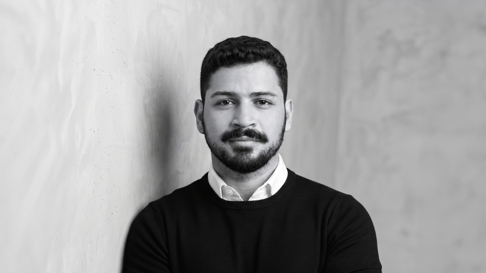
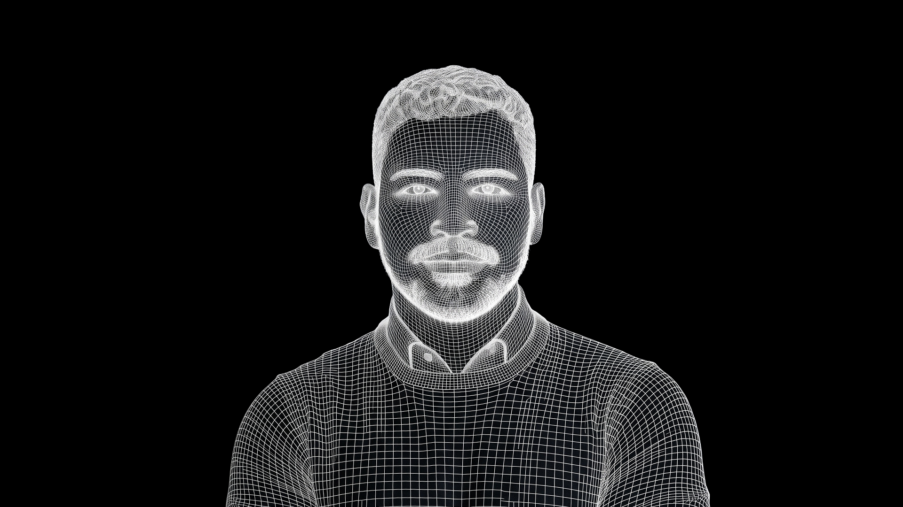
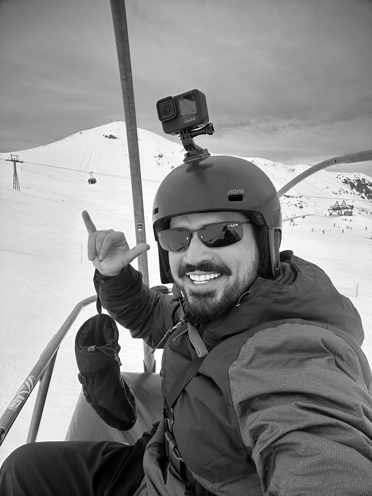
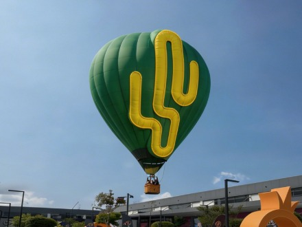

LUAN
ROINNERLUAN
ROINNER
PRODUCT
DESIGNERPRODUCT
DESIGNER

Penso em narrativa visual e persuasão com a mesma naturalidade com que desenho jornadas, testo hipóteses e leio dados.I think about visual storytelling and persuasion as naturally as I map journeys, test hypotheses and read data.
Nasci em Caicó, no interior do Rio Grande do Norte, e me mudei para São Paulo em 2021. Minha mãe trabalhou com moda a vida inteira, e eu cresci no meio disso, folheando revistas e ficando fascinado pelos editoriais. Foi ali que o design me pegou, antes mesmo de eu saber que aquilo tinha nome. Os games vieram junto desde pequeno e, anos depois, virou parte do meu trabalho e até hoje é uma das minhas grandes paixões.
I was born in Caicó, in the countryside of Rio Grande do Norte, Brazil, and moved to São Paulo in 2021. My mother worked in fashion her whole life, and I grew up surrounded by it, flipping through magazines and fascinated by the editorials. That's where design got me, before I even knew it had a name. Games came along when I was a kid too and, years later, became part of my work — they're still one of my great passions.
Comecei na direção de arte e na criação publicitária, em agências e times de marca, e depois migrei para UX/UI e Product Design. São mais de 8 anos conectando as duas pontas: conceito e identidade visual de um lado, e pesquisa, dados e produto do outro. Passei por games, finanças, varejo e setor automotivo, criando de identidades visuais e campanhas a produtos digitais completos, com pesquisa com usuários, personas, testes de usabilidade e testes A/B.
I started in art direction and advertising, at agencies and brand teams, and then moved into UX/UI and Product Design. That's more than 8 years connecting both ends: concept and visual identity on one side, research, data and product on the other. I've worked in games, finance, retail and automotive, creating everything from visual identities and campaigns to complete digital products, with user research, personas, usability testing and A/B testing.
Hoje atuo do discovery ao delivery em times ágeis, transformando objetivos de negócio em interfaces simples e consistentes com o Design System. Uso GenAI no dia a dia para acelerar pesquisa e prototipação, e levo comigo repertório de motion, Adobe e Figma.
Today I work from discovery to delivery in agile teams, turning business goals into simple interfaces consistent with the Design System. I use GenAI every day to speed up research and prototyping, and I bring a background in motion, Adobe and Figma.
Fora do design, sou apaixonado por esqui, viagem, gastronomia e música eletrônica, e vivo tentando juntar essas quatro paixões. Adoro trabalhar junto, trocar ideias e conhecer gente nova. Se quiser bater um papo, é só chamar.
Outside design, I'm passionate about skiing, travel, food and electronic music, and I'm always trying to bring those four passions together. I love working with others, trading ideas and meeting new people. If you'd like to chat, just reach out.
CompetênciasSkills
- Jornadas, fluxos e arquitetura de informaçãoJourneys, flows and information architecture
- Wireframes e protótipos, da baixa à alta fidelidadeWireframes and prototypes, from low to high fidelity
- UX Research, personas e testes de usabilidadeUX research, personas and usability testing
- Design System e consistência visual.Design Systems and visual consistency
- Discovery contínuo e decisões guiadas por dadosContinuous discovery and data-informed decisions
- Colaboração com PMs, devs e stakeholdersCollaboration with PMs, developers and stakeholders
- Direção de arte e narrativa visualArt direction and visual storytelling
- Branding e identidade visualBranding and visual identity
WORK


